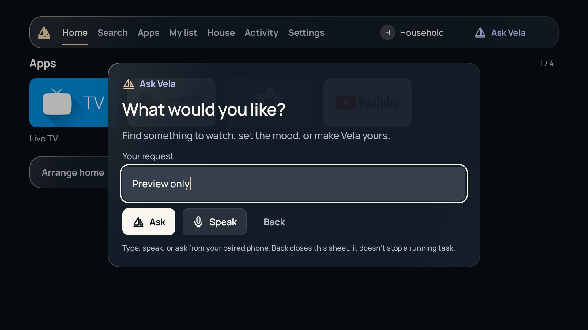
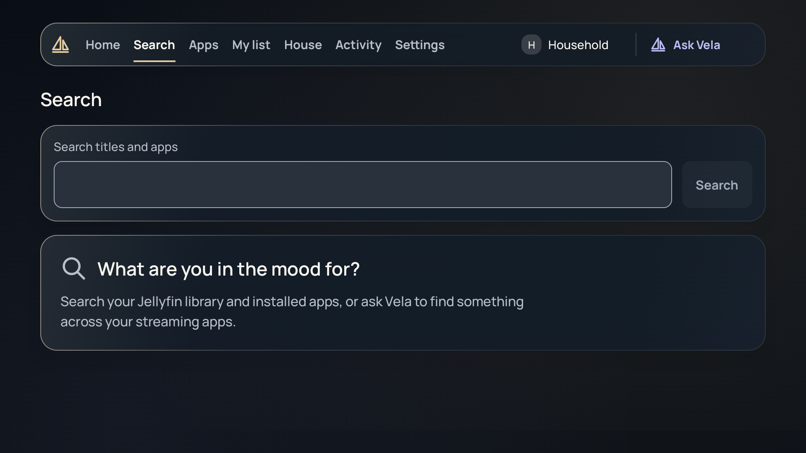
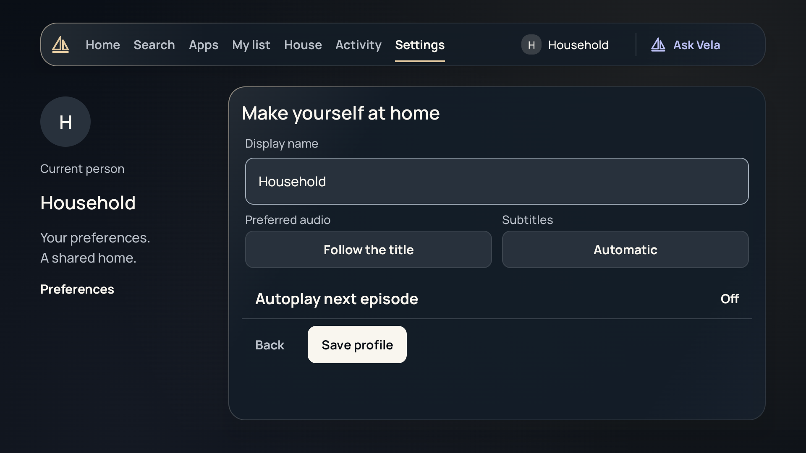
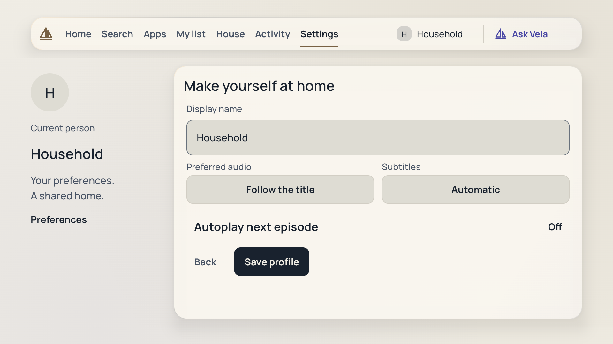

Input field correction · actual TV emulator captures
Actual native capture, cropped to the Ask sheet: a static label and one continuous focus outline.Reproduced old field: the floating label interrupts the fill inside the outset frame.The corrected field in the Day theme.
Text entry works. This draft was cleared without submitting.
The action aligns with the input container beneath its label.
The shared field in a management form; actions remain visible.
The same management form in Day; no preferences were saved.